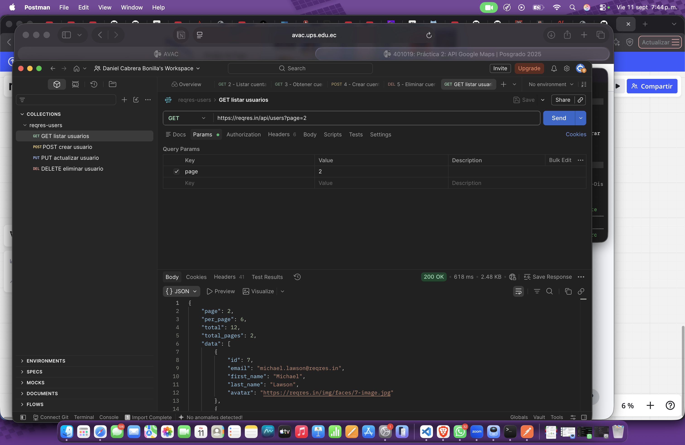
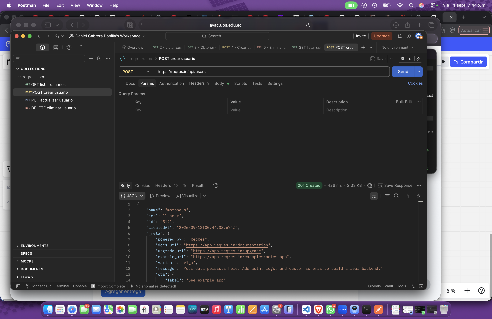
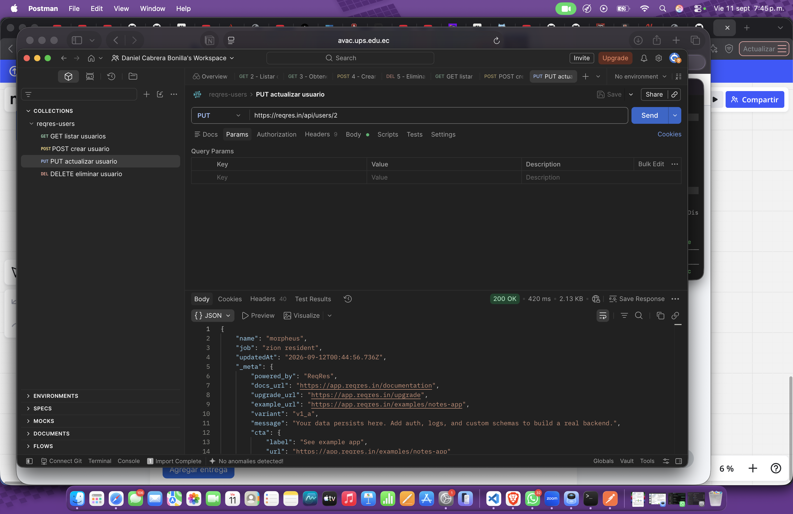
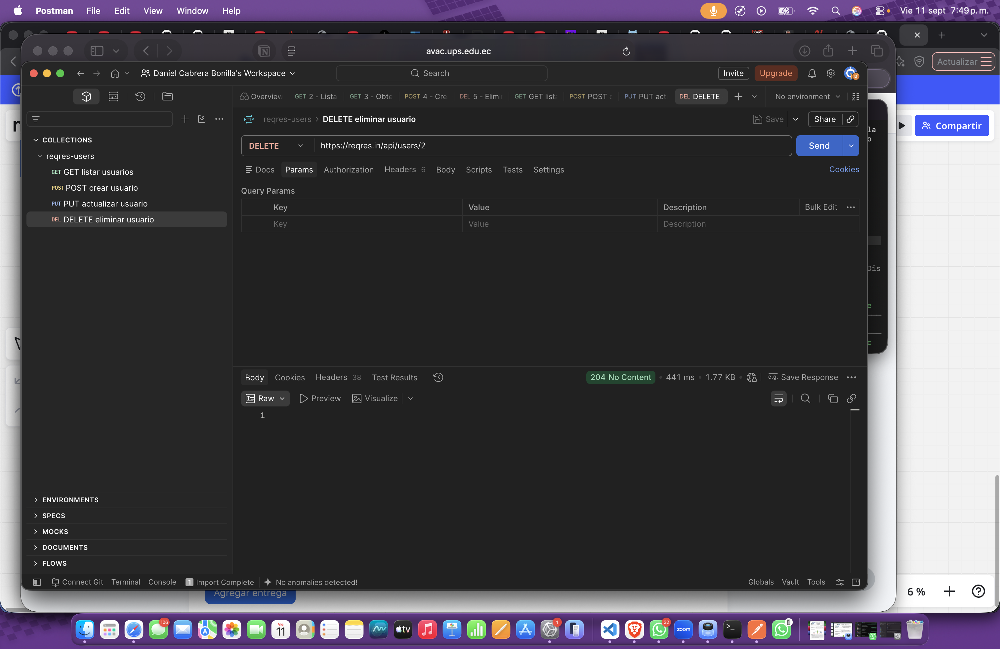

Estudiante: Brando Daniel Cabrera Bonilla
Docente: Ing. Patsy Malena Prieto, MSc.
Período Lectivo: Septiembre 2023 – Febrero 2024
| Estudiante | Brando Daniel Cabrera Bonilla |
| Asignatura | Patrones de Diseño de APIs |
| Práctica | N.º 02 — Uso de POSTMAN |
| Repositorio usado | reqres.in/api/users |
| Herramienta | Postman (Desktop App) |
El objetivo de esta práctica es identificar las ventajas y desventajas del uso de una API RESTful mediante la herramienta Postman. Para ello se creó un workspace con el nombre de la asignatura y, dentro de él, una collection llamada reqres-users con una request por cada método HTTP a probar: GET, POST, PUT y DELETE.
Como repositorio de datos se utilizó https://reqres.in/api/users, un servicio público que
simula una API REST de usuarios y responde con los códigos de estado esperados para cada operación. En POST y PUT se
envió un cuerpo en formato JSON (crudo, con header Content-Type: application/json), replicando
la interacción típica entre un frontend y un backend.
GET https://reqres.in/api/users?page=2Se solicita la página 2 del listado de usuarios. Al no requerir body ni headers especiales, el servidor responde
inmediatamente con el arreglo data conteniendo los usuarios de esa página.

POST https://reqres.in/api/usersContent-Type: application/jsonSe envía el siguiente cuerpo en la pestaña Body → raw → JSON. El servidor genera automáticamente el id
y un createdAt, y los devuelve junto con los datos enviados:
{
"name": "morpheus",
"job": "leader"
}

PUT https://reqres.in/api/users/2Content-Type: application/jsonSe actualiza el campo job del usuario con id=2. A diferencia de POST, PUT es idempotente: repetir la misma petición deja el recurso en el mismo estado.
{
"name": "morpheus",
"job": "zion resident"
}

DELETE https://reqres.in/api/users/2Se elimina el recurso identificado en la URI. El servidor responde sin body, confirmando que la operación se ejecutó correctamente.

El respaldo completo de la práctica (collection de Postman exportada, archivos JSON usados y capturas de pantalla) se encuentra publicado en el siguiente repositorio de GitHub:
https://github.com/NightMare2210/pda02-postman
200 OK, POST devuelve
201 Created junto con el recurso creado, y DELETE devuelve 204 No Content sin body.